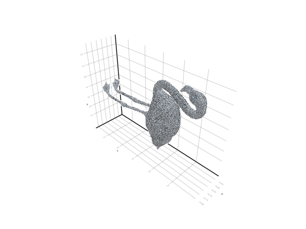
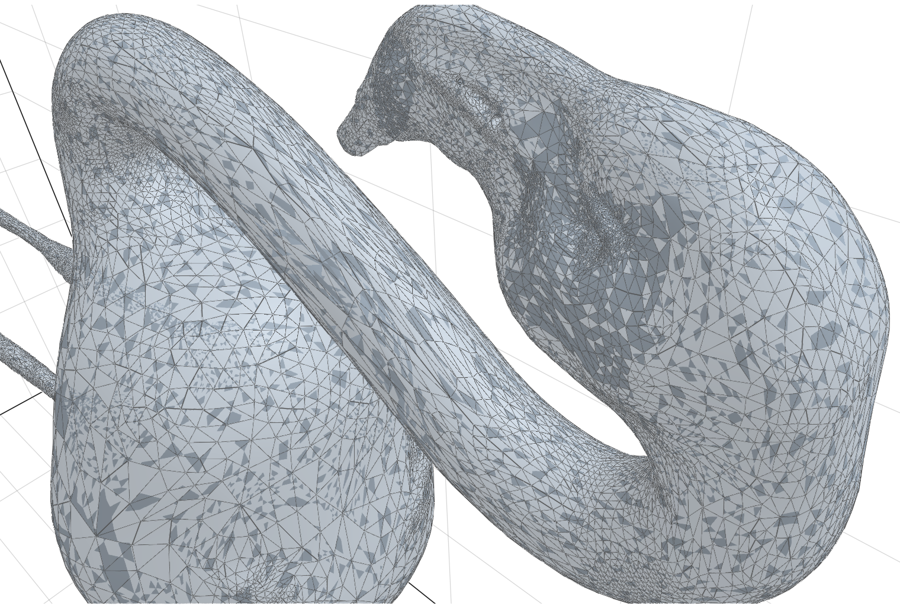
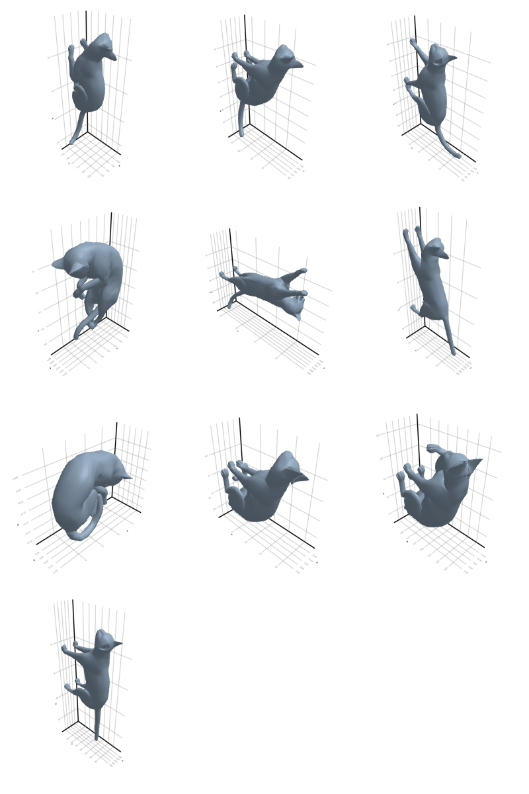
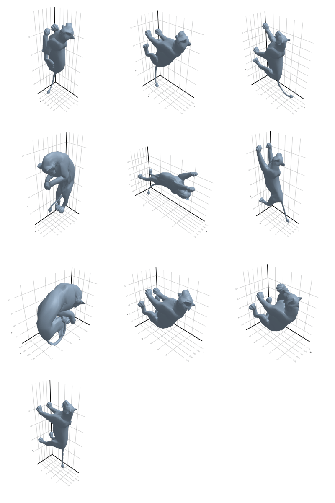
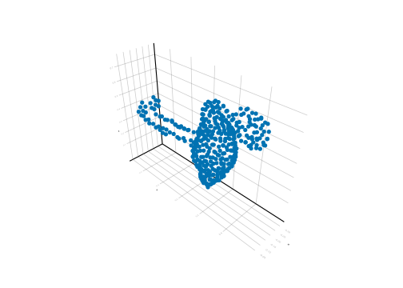
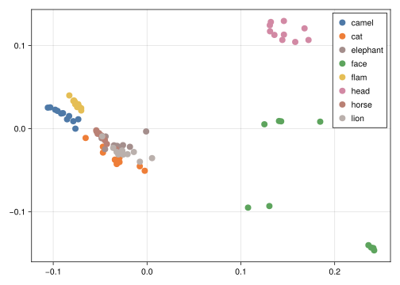

# read meshes and plot
using Meshes, GeoIO
import GLMakie as gl
# see progress
using ProgressMeter
# dataframes
using DataFramesMeta, CSV, Chain
# metric spaces and graphs
using MetricSpaces
using Graphs, SimpleWeightedGraphs
# persistent homology
import Ripserer
import PersistenceDiagrams as Pd
import Plots
# comparing the distance matrix
using Clustering, StatsPlots
import StatisticalMeasures.ConfusionMatrices as CM
using MultivariateStats3 3d shape classification using persistent homology
In this lesson, we will explore a 3d-shape classification problem using some experimental approaches.
3.1 The dataset
The dataset we are using can be found at http://people.csail.mit.edu/sumner/research/deftransfer/data.html. It consists of some reference pose of animals and human faces. The files used in this lesson can be found in this Google drive. After downloading it, unzip the file and put then inside a directory called “meshes”.
The files are written in the “.obj” format. They are meshes: sets of points and triangles that form a 3d image like the ones we can see in videogames.
Let’s start with a flamingo shape. We load some libraries
and define functions to read and visualize shapes
Code
function list_files(path="", pattern="")
files =
@chain begin
map(walkdir(path)) do (root, dirs, files)
joinpath.(root, files)
end
reduce(vcat, _)
filter(x -> occursin(pattern, x), _)
end
files
end;
function get_class_files(class)
@chain begin list_files("meshes/", class)
filter(x -> occursin(".obj", x), _)
end
end;
get_class_from_file(x) = split(x, "-")[1]
read_mesh(filepath) = GeoIO.load(filepath).geometry;
plot_mesh(ms) = viz(ms, showfacets = true, alpha = 0.5);The reference pose is the following:
filepath = "meshes/flamingo-poses/flam-reference.obj"
ms = read_mesh(filepath)
plot_mesh(ms)We can also visualize it as a gif
# fig, ax, plt = plot_mesh(ms);
# gl.record(fig, "images/3d-shapes/flamingo-ref.gif", 0:31) do i
# gl.rotate!(fig.scene, Vec3f(0, 0, 1), i * pi/16)
# end;
and see its details:

We can see some variations of the initial pose:
ms2 = read_mesh("meshes/flamingo-poses/flam-01.obj")
plot_mesh(ms2)ms2 = read_mesh("meshes/flamingo-poses/flam-02.obj")
plot_mesh(ms2)ms2 = read_mesh("meshes/flamingo-poses/flam-03.obj")
plot_mesh(ms2)And also some other animals:
ms2 = read_mesh("meshes/lion-poses/lion-reference.obj")
plot_mesh(ms2)ms2 = read_mesh("meshes/cat-poses/cat-reference.obj")
plot_mesh(ms2)3.2 Plotting
Here we will see all poses together, for each class. The last pose is the reference pose.
Code
function plot_entire_class(class)
files = get_class_files(class)
fig = gl.Figure(size = (800, 1200));
for (i, file) ∈ enumerate(files)
p, q = divrem(i - 1, 3) .+ 1
ms = read_mesh(file)
viz(fig[p, q], ms, title = "a")
end
fig
end;
function create_gif_entire_class(class)
fig = plot_entire_class(class)
gl.record(fig, "images/3d-shapes/" * class * ".gif", 0:31) do i
gl.rotate!(fig.scene, Vec3f(0, 0, 1), i * pi/16)
end
end;Code
# all_classes = [
# "camel", "cat", "elephant", "face"
# , "flamingo", "head", "horse", "lion"
# ]
# @showprogress map(create_gif_entire_class, all_classes)3.2.1 Camel

3.2.2 Cat

3.2.3 Elephant

3.2.4 Face

3.2.5 Flamingo

3.2.6 Head

3.2.7 Horse

3.2.8 Lion

3.3 Setting the classification problem
We have 84 shapes in the following directories:
filter(!isfile, readdir("meshes/", join = true))8-element Vector{String}:
"meshes/camel-poses"
"meshes/cat-poses"
"meshes/elephant-poses"
"meshes/face-poses"
"meshes/flamingo-poses"
"meshes/head-poses"
"meshes/horse-poses"
"meshes/lion-poses"Each shape \(s \in S\) has a class of the type camel, cat, elephant, etc. We can think of these classes as a function \(c: S \to C\) where \(C\) is the set of classes. Let \(S_{rp}\) be the set of reference poses.
We will try to solve the following problem: can we correctly calculate \(c(s)\) when we only know \(c\) for \(s \in S_{rp}\)? That is: knowing only the class of each reference pose, can we deduce the class of the remaining shapes using only the mesh file?
This kind of problem is common in data science and is known as a “classification problem”: we are trying to atribute classes to objects, knowing the class of fewer other objects.
3.4 From meshes to metric spaces
As this is a minicourse on topological data analysis, we know that in somewhere we have to use persistent homology.
An ingenuous attempt to solve the classification problem can be summarised as follows:
- For each shape \(S_i\), extract the points \(X_i \subset \mathbb{R}^3\) and consider \(d\) as the Euclidean distance;
- Calculate the persistence diagram \(D_i = dgm(X_i)\);
- For each \(D_i\), calculate the bottleneck distance from \(D_i\) to all \(D_j\) where \(S_j\) is a reference pose;
- The closest reference pose to \(D_i\) will be the class of \(S_i\).
This approach won’t work because of the two first steps:
The euclidean distance is not appropriate for this problem. Flamingos in different poses will have a big Gromov-Hausdorff distance. We need to use some kind of geodesic distance.
The amount of points in \(X_i\) is too big to calculate the persistence diagram. The elephant class has more than 75.000 points for each shape. This will probably explode your RAM memory when calculating the Rips complex.
Fortunately, there are ways to contourn these problems!
Extract a subset of “reasonably spaced points” of \(S\) that still contains its core geometric properties;
Calculate the geodesic distance between these points using the shape \(S\).
3.4.1 From meshes to \(\mathbb{R}^3\)
Let’s extract the points of some \(S\) as a subspace of \(\mathbb{R}^3\):
mesh_to_metric_space(ms) = ms.vertices .|> coordinates .|> Vector |> EuclideanSpace;X = mesh_to_metric_space(ms)26907-element Vector{StaticArraysCore.SVector{3, Float64}}:
[-0.0497887, 0.179158, 0.304686]
[-0.0478521, 0.176355, 0.337555]
[-0.0489072, 0.170843, 0.36641]
[-0.0479558, 0.154587, 0.319926]
[-0.0484908, 0.148718, 0.356395]
[-0.0549708, 0.129732, 0.300859]
[-0.0529351, 0.125235, 0.325443]
[-0.0537256, 0.124306, 0.346663]
[-0.0569744, 0.201286, 0.371339]
[-0.0536567, 0.19095, 0.297565]
[-0.0522451, 0.191074, 0.306529]
[-0.0571656, 0.181709, 0.282749]
[-0.0524422, 0.185973, 0.296856]
⋮
[-0.209925, 0.44, 0.658976]
[-0.20707, 0.420017, 0.655563]
[-0.210662, 0.444178, 0.660018]
[-0.211038, 0.441635, 0.658588]
[-0.208734, 0.420334, 0.651864]
[-0.211586, 0.429432, 0.654244]
[-0.210811, 0.425791, 0.653265]
[-0.210709, 0.423044, 0.649643]
[-0.211377, 0.439884, 0.657541]
[-0.211205, 0.437203, 0.65695]
[-0.211346, 0.434063, 0.656262]
[-0.212218, 0.433793, 0.654967]We can see that \(X\) is made of 26907 points of \(\mathbb{R}^3\). We can plot it:
gl.scatter(X, markersize = 1)
3.4.2 From meshes to graphs
Now, to calculate the geodesic distance, we will create a graph from the mesh \(S\). We define a function
Code
function graph_from_mesh(ms)
# the set of vertices
V = coordinates.(ms.vertices)
# create an empty graph
g = SimpleWeightedGraph()
# add n vertices to it
n = length(V)
add_vertices!(g, n)
# the set of triangles of the mesh ms
triangles = ms.topology.connec
# for each triangle, add its edges to the graph
@showprogress desc = "Adding vertices to graph..." for t ∈ triangles
v1, v2, v3 = t.indices
add_edge!(g, v1, v2, dist_euclidean(V[v1], V[v2]))
add_edge!(g, v1, v3, dist_euclidean(V[v1], V[v3]))
add_edge!(g, v2, v3, dist_euclidean(V[v2], V[v3]))
end
g
end;and create the graph \(g\) from the mesh
g = graph_from_mesh(ms){26907, 79244} undirected simple Int64 graph with Float64 weightsThis weighted graph is the 1-skeleton of the mesh, and the weights between the vertices are the euclidean distance between then (as subsets of \(\mathbb{R}^3\)).
We can see the sparse array of its weight as follows:
weights(g)26907×26907 SparseArrays.SparseMatrixCSC{Float64, Int64} with 158488 stored entries:
⎡⠀⠀⠀⠀⠀⠀⠀⠀⠀⠀⠈⠻⣿⣶⣶⣖⣆⣀⡀⢀⡀⠀⠀⠀⠀⠀⠀⠀⠤⣄⡀⠀⠀⠀⠀⠀⠀⠀⠀⠀⎤
⎢⠀⠀⠀⠀⠀⠀⠀⠀⠀⠀⠀⠀⠀⠈⠈⢋⠛⠿⡿⣿⣿⣾⣆⣀⡀⠀⠀⠀⠀⠀⠉⠛⠿⢤⡀⠀⠀⠈⠁⠀⎥
⎢⠀⠀⠀⠀⠀⠀⠀⠀⠀⠀⠀⠀⠀⠀⠀⠀⠀⠀⠀⠈⠙⠛⠻⠿⠷⠷⣦⣀⡀⠀⠀⠀⠀⠀⠉⠙⠂⠀⠀⠀⎥
⎢⠀⠀⠀⠀⠀⠀⠀⠀⠀⠀⠀⠀⠀⠀⠀⠒⠠⠠⠄⡀⠀⠀⠀⠀⠀⠀⠀⠈⠉⠛⠳⢤⣄⣀⠀⠀⠀⠐⢦⠀⎥
⎢⠀⠀⠀⠀⠀⠀⠀⠀⠀⠀⠀⠀⠀⠀⠀⠀⠀⠀⠀⠈⠉⠐⠒⠀⠀⠀⠀⠀⠀⢀⡀⠀⠈⠉⠛⠳⠶⣤⣈⠙⎥
⎢⣦⡀⠀⠀⠀⠀⠀⠀⠀⠀⠰⣦⣤⣠⢀⠀⠀⠀⠀⠀⠀⠀⠀⠀⠀⠀⠀⠀⠀⠀⠈⠁⠈⠉⠂⠀⠀⠀⠉⠛⎥
⎢⢻⣿⡀⠀⠀⠀⠀⠀⠀⠀⠀⣻⣿⣿⣿⣄⠀⠀⠀⠀⠀⠀⠀⠀⠀⠀⠀⠀⣂⠀⠀⠀⠀⠀⠀⠀⠀⠀⠀⠀⎥
⎢⢸⢿⡦⢀⠀⠀⢠⠀⠀⠀⠀⠐⠛⢿⢿⣷⣷⡤⡄⢐⠀⠀⠀⠀⠀⠀⠀⠀⠈⠳⡄⠀⠀⠀⠀⠀⠀⠀⠀⠀⎥
⎢⠈⢹⣿⡄⠀⠀⠀⡂⠀⠀⠀⠀⠀⠀⠙⡿⣿⣿⣷⣾⣄⢀⡀⠀⠀⠀⠀⠀⠀⠀⠑⣖⠂⠀⠀⠀⠀⠀⠂⠀⎥
⎢⠀⢈⣿⣯⡀⠀⠀⠡⡀⠀⠀⠀⠀⠀⢀⢉⣹⣿⣿⣿⣼⣕⣀⠀⠀⠀⠀⠀⠀⠀⠀⠘⢷⡄⠀⠀⠀⠀⠀⠀⎥
⎢⠀⠈⣻⣿⣷⠀⠀⠀⢃⠀⠀⠀⠀⠀⠀⠀⠀⢙⢖⢿⣿⣿⣧⣲⣀⠀⠀⠀⠀⠀⠀⠀⠀⠸⣄⠀⠀⠀⠀⠀⎥
⎢⠀⠀⠈⢹⣿⡆⠀⠀⠘⠀⠀⠀⠀⠀⠀⠀⠀⠈⠀⠘⢩⣻⣿⣿⣷⣄⠀⠀⠀⠀⠀⠀⠀⠀⠹⣧⠀⠀⠀⠀⎥
⎢⠀⠀⠀⠈⢽⡇⠀⠀⠀⠀⠀⠀⠀⠀⠀⠀⠀⠀⠀⠀⠀⠘⠙⢿⣿⣿⡇⠀⠀⠀⠀⠀⠀⠀⠀⠀⠃⠀⠀⠀⎥
⎢⠀⠀⠀⠀⠈⢻⡀⠀⠀⠀⠀⠀⠀⠀⠀⠀⠀⠀⠀⠀⠀⠀⠀⠀⠉⠉⠻⣦⣄⠀⠀⠀⠀⠀⠀⠀⠀⠀⠀⠀⎥
⎢⠀⢧⠀⠀⠀⠈⣧⠀⠀⢀⠀⠀⠈⠘⢦⡀⠀⠀⠀⠀⠀⠀⠀⠀⠀⠀⠀⠙⠻⣦⡄⠀⠀⠀⠀⠀⠀⢀⠀⠀⎥
⎢⠀⠈⣧⠀⠀⠀⠙⣆⠀⠈⠆⠀⠀⠀⠀⠉⢱⢤⣀⠀⠀⠀⠀⠀⠀⠀⠀⠀⠀⠉⠻⣦⡀⠀⠀⠀⠀⠘⢲⠀⎥
⎢⠀⠀⠛⣇⠀⠀⠀⢹⡆⠀⡆⠀⠀⠀⠀⠀⠈⠀⠙⠷⣀⡀⠀⠀⠀⠀⠀⠀⠀⠀⠀⠈⠻⣦⡀⠀⠀⠀⢰⣀⎥
⎢⠀⠀⠀⠈⣇⠀⠀⠀⢿⡀⠈⠀⠀⠀⠀⠀⠀⠀⠀⠀⠀⠙⠷⣦⠀⠀⠀⠀⠀⠀⠀⠀⠀⠈⠿⣧⣀⠀⠀⠙⎥
⎢⠀⠀⡀⠀⠈⠀⢀⠀⠘⣧⠀⠀⠀⠀⠀⠀⠀⠀⠀⠀⠀⠀⠀⠀⠉⠀⠀⠀⠀⢀⣀⠀⠀⠀⠀⠘⠻⣦⡀⠀⎥
⎣⠀⠀⠁⠀⠀⠀⠈⠓⣆⠘⣧⠀⠀⠀⠀⠀⠈⠀⠀⠀⠀⠀⠀⠀⠀⠀⠀⠀⠀⠀⠘⠒⠐⢲⣄⠀⠀⠈⠻⣦⎦Notice, however, that the mesh is not connected! This can be seen with
is_connected(g)falseThese are the connected components of \(g\):
connected_components(g)514-element Vector{Vector{Int64}}:
[1, 2, 3, 4, 5, 6, 7, 8, 9, 10 … 26898, 26899, 26900, 26901, 26902, 26903, 26904, 26905, 26906, 26907]
[4032]
[4036]
[4039]
[4042]
[4046]
[4047]
[4048]
[4049]
[4050]
[4077]
[4099]
[4100]
⋮
[7089]
[7090]
[7091]
[7092]
[7093]
[7094]
[7095]
[7096]
[7097]
[7098]
[7099]
[7100]There is one big connected components, and several smaller ones with 1 point each. Let’s extract the one with the most points and throw away the points of \(X\) outside it.
Code
function extract_biggest_connected_component(g)
cc_components = connected_components(g)
ids_biggest_component = cc_components[findmax(length, cc_components)[2]]
# modify the graph g on place
g = g[ids_biggest_component]
# return g and the ids of the biggest connected component
g, ids_biggest_component
end;g, ids_biggest_component = extract_biggest_connected_component(g);We can see that \(g\) now is connected:
is_connected(g)trueLet’s throw away from \(X\) the points outside this component:
X = X[ids_biggest_component]26394-element Vector{StaticArraysCore.SVector{3, Float64}}:
[-0.0497887, 0.179158, 0.304686]
[-0.0478521, 0.176355, 0.337555]
[-0.0489072, 0.170843, 0.36641]
[-0.0479558, 0.154587, 0.319926]
[-0.0484908, 0.148718, 0.356395]
[-0.0549708, 0.129732, 0.300859]
[-0.0529351, 0.125235, 0.325443]
[-0.0537256, 0.124306, 0.346663]
[-0.0569744, 0.201286, 0.371339]
[-0.0536567, 0.19095, 0.297565]
[-0.0522451, 0.191074, 0.306529]
[-0.0571656, 0.181709, 0.282749]
[-0.0524422, 0.185973, 0.296856]
⋮
[-0.209925, 0.44, 0.658976]
[-0.20707, 0.420017, 0.655563]
[-0.210662, 0.444178, 0.660018]
[-0.211038, 0.441635, 0.658588]
[-0.208734, 0.420334, 0.651864]
[-0.211586, 0.429432, 0.654244]
[-0.210811, 0.425791, 0.653265]
[-0.210709, 0.423044, 0.649643]
[-0.211377, 0.439884, 0.657541]
[-0.211205, 0.437203, 0.65695]
[-0.211346, 0.434063, 0.656262]
[-0.212218, 0.433793, 0.654967]We now have 26394 points, which is a small reduction.
3.4.3 Farthest points sampling
We could just select a random sample of points from our space, but points in high-density areas would be selected a lot more. There is another way to select points in a “well spaced manner”, called the farthest point sampling algorithm. This algorithm was shown to me by Facundo Mémoli on a dirty blackboard in 2018 and the simplicity of it astonished me. For the curious ones, the algorithm is detailed below.
Important
Let \((X, d)\) be a metric space. Fix an integer \(n\). Let \(C = \emptyset\) be the “set of chosen points”. Select \(x_1 \in X\) randomly and add it to \(C\). Repeat the following procedure until you have \(n\) points in \(C\):
Calculate the point \(x \in X\) that is the most distant from all elements of \(C\), ie, \[ \max \{ d(x, c), c \in C \} = \max \{d(x', c), x' \in X, c \in C \}. \]
Add \(x\) to \(C\).
If \(C\) has \(n\) points, stop.
The set \(C\) is called a farthest points sampling of \(X\) with size \(n\).
Notice that running the algorithm several times can lead to different sets \(C\) because the first term is chosen randomly.
Let’s extract 400 points with the FPS algorithm and the euclidean distance:
ids_fps = farthest_points_sample(X, 400);
X_fps = X[ids_fps]400-element Vector{StaticArraysCore.SVector{3, Float64}}:
[-0.0786113, 0.0959887, 0.377264]
[-0.270087, -0.46859, 0.403179]
[-0.195335, 0.499662, 0.665035]
[-0.182689, 0.116707, 0.0055631]
[-0.190339, 0.178141, 0.665322]
[-0.115271, -0.210615, 0.308682]
[-0.242939, 0.258787, 0.232022]
[-0.293125, 0.171497, 0.447829]
[-0.244399, -0.0405329, 0.3474]
[-0.18597, 0.34287, 0.529966]
[-0.0913642, 0.138235, 0.183708]
[-0.122856, -0.398869, 0.308215]
[-0.112374, 0.27925, 0.369562]
⋮
[-0.224587, -0.151398, 0.331426]
[-0.186176, 0.284505, 0.265903]
[-0.142247, 0.0378547, 0.351616]
[-0.273996, 0.123917, 0.228237]
[-0.200751, 0.151651, 0.618269]
[-0.265151, 0.0634633, 0.340798]
[-0.0712273, 0.103154, 0.286142]
[-0.202332, 0.104544, 0.0852435]
[-0.233787, 0.112053, 0.517448]
[-0.103787, 0.263678, 0.39769]
[-0.102301, 0.136969, 0.498849]
[-0.195986, 0.0810476, 0.514424]gl.scatter(X_fps, markersize = 10)
This is a very good approximation!
We are now interested in calculating the geodesic distance between these 400 points. But be careful! The geodesic distance need the entire mesh to work.
3.4.4 Geodesic distances
Given a shape \(S\), we can think of the geodesic distance between two points as “the least distance an and would need to walk from one point to another”. We will approximate this “walkable” paths using the edges of the triangles of the shape \(S\). Remember: a mesh is a set of points and triangles!
The Dijkstra algorithm is perfect for our needs: it calculates the shortest path from one point to another in a weighted graph. So all we need is to:
- Transform \(S\) into a graph where the edges have weights (the euclidean distance between these points);
- Calculate the shortest path between each two points.
We already have the first item, so let’s calculate the second.
Code
function geodesic_distance_from_graph(g, ids)
n = length(ids)
D = zeros(n, n)
# for each point, calculate the distance from it to every other point of g
@showprogress desc = "Calculating geodesic distance..." Threads.@threads for (i, id) ∈ collect(enumerate(ids))
dts = dijkstra_shortest_paths(g, id)
D[i, :] = dts.dists[ids]
end
# force simmetry on X, because of small difference
# in the calculation of paths
for i ∈ 1:n
for j ∈ i:n
D[i, j] = D[j, i]
end
end
# normalize the distance so the max is 1
max_dist = maximum(D)
D = D ./ max_dist
return D
end;D = geodesic_distance_from_graph(g, ids_fps)400×400 Matrix{Float64}:
0.0 0.519694 0.509668 0.284014 … 0.140024 0.0928235 0.129596
0.519694 0.0 0.920129 0.657965 0.655943 0.562257 0.516952
0.509668 0.920129 0.0 0.781283 0.521226 0.420469 0.410541
0.284014 0.657965 0.781283 0.0 0.314411 0.374293 0.372922
0.24983 0.652571 0.305303 0.512691 0.268173 0.162963 0.1413
0.225695 0.641645 0.699033 0.431518 … 0.365719 0.303249 0.301074
0.274148 0.615363 0.635094 0.194119 0.174508 0.303522 0.288509
0.207748 0.533194 0.461336 0.335388 0.202354 0.197905 0.117043
0.176993 0.348267 0.576337 0.310445 0.313242 0.21866 0.173355
0.338688 0.751567 0.182294 0.612834 0.351108 0.250203 0.243119
0.142131 0.572406 0.650221 0.144634 … 0.191011 0.229752 0.271443
0.354532 0.770352 0.827253 0.561386 0.494556 0.431711 0.429115
0.155846 0.674692 0.543909 0.296723 0.0249971 0.162436 0.244471
⋮ ⋱
0.249746 0.271298 0.652164 0.387078 0.385996 0.293374 0.248069
0.222161 0.657551 0.624598 0.226475 0.122281 0.253756 0.305484
0.074755 0.463587 0.533608 0.266854 … 0.214779 0.141066 0.129961
0.212759 0.514727 0.619344 0.170003 0.2815 0.287902 0.235247
0.206585 0.606001 0.31562 0.467156 0.215361 0.114716 0.0964137
0.161375 0.424538 0.533167 0.253037 0.294519 0.191495 0.13913
0.0663128 0.531108 0.575981 0.218236 0.163162 0.159136 0.195909
0.242573 0.598987 0.724034 0.0592198 … 0.311078 0.335397 0.315672
0.161488 0.525434 0.400202 0.388727 0.224928 0.123066 0.0363586
0.140024 0.655943 0.521226 0.314411 0.0 0.139686 0.22252
0.0928235 0.562257 0.420469 0.374293 0.139686 0.0 0.086707
0.129596 0.516952 0.410541 0.372922 0.22252 0.086707 0.0We can see that \(D\) makes sense just by plotting \(X_fps\) colored by the sum of the distances to each points:
exc = map(sum, eachcol(D))
gl.scatter(X_fps, color = exc, markersize = 10)
Looks good! The extremities of the flamingo are in a lighter color, indicating that the sum of the distances there is bigger. Now we have 1000 points sampled from \(S\), together with the geodesic distance.
3.5 Persistent homology
We can now calculate the persistence diagram of \(X_fps\) with the geodesic distance and use it! Let’s load some packages and calculate it
pd = Ripserer.ripserer(D, dim_max = 2, verbose=true, sparse = true, threshold = 0.4)3-element Vector{PersistenceDiagrams.PersistenceDiagram}:
400-element 0-dimensional PersistenceDiagram
199-element 1-dimensional PersistenceDiagram
20-element 2-dimensional PersistenceDiagramPloting the intervals looks as follows:
Code
function plot_barcode(pd)
# get the size of the longest interval
threshold =
@chain begin
vcat(pd...)
last.(_)
filter(isfinite, _)
maximum
end
# plot the barcode using this interval as the maximum value of the x-axis
Ripserer.barcode(pd, infinity = threshold)
end;plot_barcode(pd)or just the 1- and 2-dimensional barcode:
plot_barcode(pd[2:3])3.6 Summarizing
All the hard work on the previous sections was just to prepare our dataset from file to barcode. That’s why they say that data science is 80% preparing the data and 20% analyzing it!
We can summarise what we did with the following function:
Code
function file_to_barcode(filepath; n_points = 1000, dim_max = 1)
ms = read_mesh(filepath)
X = mesh_to_metric_space(ms)
g = graph_from_mesh(ms)
g, ids_biggest_component = extract_biggest_connected_component(g)
X = X[ids_biggest_component]
ids_fps = farthest_points_sample(X, n_points);
X_fps = X[ids_fps]
D = geodesic_distance_from_graph(g, ids_fps)
pd = Ripserer.ripserer(D, dim_max = dim_max, verbose=true, sparse = true, threshold = 0.8)
return X_fps, D, pd
end;We also define some functions to save the barcodes and metric spaces to disk, so we don’t have to calculate all of them in a single session. Calculating the 2-dimensional barcode can take some time depending on your hardware!
Code
function pd_to_dataframe(pd)
df = @chain begin
map(pd) do p
DataFrame(
birth=p .|> first, death=p .|> last, dim=p.dim
)
end
vcat(_...)
end
df
end;
function dataframe_to_pd(df)
df.threshold .= 1
@chain df begin
groupby(:dim)
collect
map(Pd.PersistenceDiagram, _)
end
end;
function metric_space_to_df(X)
@chain X_fps begin
stack
transpose
DataFrame(_, :auto)
end
end;Now we loop over all meshes, calculate its persistence diagram and save it to disk, together with the \(X_{fps}\) metric space as above.
Important: This can take some time! If you cloned my github repository, these files are already there, so you can skip the following piece of code:
overwrite_old_files = true
@showprogress "Calculating barcode..." for file ∈ list_files("meshes/", ".obj")
println("Calculating barcode from file $file ...")
file_pd = replace(file, ".obj" => "-pd.csv")
# skip if there is a file already
if isfile(file_pd) & !overwrite_old_files continue end
X_fps, D, pd = file_to_barcode(file, n_points = 350, dim_max = 2)
df = pd_to_dataframe(pd)
CSV.write(file_pd, df)
file_X = replace(file, ".obj" => "-points.csv")
CSV.write(file_X, metric_space_to_df(X_fps))
endWe read the persistence diagrams saved on disk and pass them to table (a DataFrame object), but first we throw away small intervals.
Code
function throw_away_small_intervals(pd, min_pers = 0.01)
map(pd) do p
filter(x -> Pd.persistence(x) > min_pers, p)
end
end;
function read_pds_from_files(directory, min_interval_size = 0.05)
pds_df = DataFrame()
# file = list_files("meshes/", "-pd.csv")[1]
for file ∈ list_files(directory, "-pd.csv")
pd = @chain begin
CSV.read(file, DataFrame)
dataframe_to_pd(_)
throw_away_small_intervals(min_interval_size)
end
name = replace(file, "-pd.csv" => "")
push!(pds_df, (Path = name, Persistence_diagram = pd))
end
pds_df
sort!(pds_df, :Path)
pds_df.File = [split(s, "/")[3] for s ∈ pds_df.Path]
pds_df.Class = [split(s, "-")[1] for s ∈ pds_df.File]
pds_df
end;3.7 A metric problem
Now we proceed to create a dataframe that contains all we need to classify our shapes.
pds_df = read_pds_from_files("meshes/", 0.01);
first(pds_df, 20)20×4 DataFrame
| Row | Path | Persistence_diagram | File | Class |
|---|---|---|---|---|
| String | Array… | SubStrin… | SubStrin… | |
| 1 | meshes/camel-poses/camel-01 | PersistenceDiagram[350-element 0-dimensional PersistenceDiagram, 64-element 1-dimensional PersistenceDiagram, 2-element 2-dimensional PersistenceDiagram] | camel-01 | camel |
| 2 | meshes/camel-poses/camel-02 | PersistenceDiagram[350-element 0-dimensional PersistenceDiagram, 62-element 1-dimensional PersistenceDiagram, 5-element 2-dimensional PersistenceDiagram] | camel-02 | camel |
| 3 | meshes/camel-poses/camel-03 | PersistenceDiagram[350-element 0-dimensional PersistenceDiagram, 79-element 1-dimensional PersistenceDiagram, 2-element 2-dimensional PersistenceDiagram] | camel-03 | camel |
| 4 | meshes/camel-poses/camel-04 | PersistenceDiagram[350-element 0-dimensional PersistenceDiagram, 75-element 1-dimensional PersistenceDiagram, 3-element 2-dimensional PersistenceDiagram] | camel-04 | camel |
| 5 | meshes/camel-poses/camel-05 | PersistenceDiagram[350-element 0-dimensional PersistenceDiagram, 68-element 1-dimensional PersistenceDiagram, 2-element 2-dimensional PersistenceDiagram] | camel-05 | camel |
| 6 | meshes/camel-poses/camel-06 | PersistenceDiagram[350-element 0-dimensional PersistenceDiagram, 71-element 1-dimensional PersistenceDiagram, 2-element 2-dimensional PersistenceDiagram] | camel-06 | camel |
| 7 | meshes/camel-poses/camel-07 | PersistenceDiagram[350-element 0-dimensional PersistenceDiagram, 78-element 1-dimensional PersistenceDiagram, 4-element 2-dimensional PersistenceDiagram] | camel-07 | camel |
| 8 | meshes/camel-poses/camel-08 | PersistenceDiagram[350-element 0-dimensional PersistenceDiagram, 73-element 1-dimensional PersistenceDiagram, 4-element 2-dimensional PersistenceDiagram] | camel-08 | camel |
| 9 | meshes/camel-poses/camel-09 | PersistenceDiagram[350-element 0-dimensional PersistenceDiagram, 83-element 1-dimensional PersistenceDiagram, 5-element 2-dimensional PersistenceDiagram] | camel-09 | camel |
| 10 | meshes/camel-poses/camel-10 | PersistenceDiagram[350-element 0-dimensional PersistenceDiagram, 79-element 1-dimensional PersistenceDiagram, 3-element 2-dimensional PersistenceDiagram] | camel-10 | camel |
| 11 | meshes/camel-poses/camel-reference | PersistenceDiagram[350-element 0-dimensional PersistenceDiagram, 70-element 1-dimensional PersistenceDiagram, 5-element 2-dimensional PersistenceDiagram] | camel-reference | camel |
| 12 | meshes/cat-poses/cat-01 | PersistenceDiagram[350-element 0-dimensional PersistenceDiagram, 87-element 1-dimensional PersistenceDiagram, 11-element 2-dimensional PersistenceDiagram] | cat-01 | cat |
| 13 | meshes/cat-poses/cat-02 | PersistenceDiagram[350-element 0-dimensional PersistenceDiagram, 73-element 1-dimensional PersistenceDiagram, 10-element 2-dimensional PersistenceDiagram] | cat-02 | cat |
| 14 | meshes/cat-poses/cat-03 | PersistenceDiagram[350-element 0-dimensional PersistenceDiagram, 83-element 1-dimensional PersistenceDiagram, 15-element 2-dimensional PersistenceDiagram] | cat-03 | cat |
| 15 | meshes/cat-poses/cat-04 | PersistenceDiagram[350-element 0-dimensional PersistenceDiagram, 92-element 1-dimensional PersistenceDiagram, 12-element 2-dimensional PersistenceDiagram] | cat-04 | cat |
| 16 | meshes/cat-poses/cat-05 | PersistenceDiagram[350-element 0-dimensional PersistenceDiagram, 77-element 1-dimensional PersistenceDiagram, 6-element 2-dimensional PersistenceDiagram] | cat-05 | cat |
| 17 | meshes/cat-poses/cat-06 | PersistenceDiagram[350-element 0-dimensional PersistenceDiagram, 89-element 1-dimensional PersistenceDiagram, 7-element 2-dimensional PersistenceDiagram] | cat-06 | cat |
| 18 | meshes/cat-poses/cat-07 | PersistenceDiagram[350-element 0-dimensional PersistenceDiagram, 95-element 1-dimensional PersistenceDiagram, 11-element 2-dimensional PersistenceDiagram] | cat-07 | cat |
| 19 | meshes/cat-poses/cat-08 | PersistenceDiagram[350-element 0-dimensional PersistenceDiagram, 71-element 1-dimensional PersistenceDiagram, 13-element 2-dimensional PersistenceDiagram] | cat-08 | cat |
| 20 | meshes/cat-poses/cat-09 | PersistenceDiagram[350-element 0-dimensional PersistenceDiagram, 72-element 1-dimensional PersistenceDiagram, 10-element 2-dimensional PersistenceDiagram] | cat-09 | cat |
The dataframe looks ok! You can plot the barcodes as follows:
pd2 = pds_df.Persistence_diagram[1]
plot_barcode(pd2[2:3])Now we calculate the bootleneck distance between each pair of persistence diagrams. This can take some time! If you cloned the repository, you don’t need to run this piece of code.
pds = pds_df.Persistence_diagram
n = nrow(pds_df)
DB = zeros(n, n)
@showprogress for i ∈ 1:n
for j ∈ i:n
if i == j
DB[i, j] = 0
continue
end
DB[i, j] =
Pd.Bottleneck()(pds[i][2], pds[j][2]) +
Pd.Bottleneck()(pds[i][3], pds[j][3])
DB[j, i] = DB[i, j]
end
end
CSV.write("meshes/bottleneck_distance.csv", DataFrame(DB, :auto))Notice that we defined the distance \(DB_{i, j}\) between two shapes \(X_i\) and \(X_j\) as
\[ DB_{i, j} = d_b(\text{dgm}_1(X_i), \text{dgm}_1(X_j)) + d_b(\text{dgm}_2(X_i), \text{dgm}_2(X_j)) \]
where \(d_b\) is the bottleneck distance, and \(dgm_i\) is the \(i\)-dimensional persistence diagram.
3.8 Facing the truth
We read \(DB\) from disk, in case you did not calculate it previously
DB = CSV.read("meshes/bottleneck_distance.csv", DataFrame) |> Matrix
DB84×84 Matrix{Float64}:
0.0 0.0295622 0.0290437 … 0.0607949 0.0572987 0.0555027
0.0295622 0.0 0.0243571 0.0771963 0.0725624 0.0726897
0.0290437 0.0243571 0.0 0.0751122 0.0706953 0.07074
0.0250842 0.0221888 0.0246823 0.0699059 0.0653315 0.0658234
0.0192733 0.0247452 0.0230421 0.0647476 0.062099 0.0607826
0.0300337 0.0257192 0.014413 … 0.0729532 0.0680901 0.0688222
0.0270758 0.0372715 0.0355232 0.0541806 0.0491843 0.0458797
0.0239714 0.0229871 0.0240051 0.0654462 0.0644016 0.0613805
0.0354928 0.0229931 0.0236201 0.0807913 0.0765014 0.0759065
0.0282784 0.0247452 0.0209122 0.0744052 0.0719081 0.0700331
0.0242075 0.0255816 0.0278271 … 0.0672653 0.0677038 0.0630916
0.0671795 0.0780996 0.0795003 0.0520017 0.0460498 0.0740998
0.0622585 0.076908 0.0745496 0.0303738 0.0299614 0.0425986
⋮ ⋱
0.053006 0.0704997 0.0687614 0.0305132 0.0366311 0.0263213
0.0479228 0.0651169 0.0636536 0.0289348 0.0406509 0.0261623
0.0745802 0.0753067 0.0726818 0.0587221 0.0524114 0.0815307
0.0505002 0.0651497 0.0599707 … 0.0282434 0.0248999 0.0497492
0.055084 0.0697334 0.0664574 0.0302786 0.0304893 0.0361665
0.0601642 0.0705143 0.066331 0.0346506 0.0309857 0.0538022
0.0512327 0.06873 0.0667174 0.0254585 0.0252535 0.0252038
0.0504608 0.0675057 0.0672269 0.0248009 0.0211124 0.0363764
0.061205 0.0701361 0.0729084 … 0.0441923 0.0406347 0.066897
0.0607949 0.0771963 0.0751122 0.0 0.0247205 0.0250417
0.0572987 0.0725624 0.0706953 0.0247205 0.0 0.0356727
0.0555027 0.0726897 0.07074 0.0250417 0.0356727 0.0How can we visualize \(DB\)?
3.8.1 Heatmap
Heatmaps are matrices (2d arrays) where each element is colored by some value. In the ideal world, our matrix \(DB\) will have a square of low values for each comparison between the same class, and a higher value when comparing elements of different classes.
labels = pds_df.Class |> copy
for i ∈ 2:length(pds_df.Class)
if labels[i] == pds_df.Class[i-1]
labels[i] = ""
end
end
labels = (1:nrow(pds_df), labels)
plot(DB, st = :heatmap, xticks = labels, yticks = labels)We can see that the diagonals (intra-class comparisons) are good enough: they are dark-coloured squares, indicating small distances. But there are also black squares outside the diagonal, which means that some different classes are close to each other.
3.8.2 Dendrograms
Dendrograms are a nice way to visualize a distance matrix. They represent the evolution of the connected components as some parameter (usually the radius of circles centered on each point) grows.
Code
function plot_hc(hc)
plot(
hc, xticks = (1:nrow(pds_df), pds_df.File[hc.order])
, xflip = true, xrotation = 270
, xtickfont = font(5, "Roboto")
)
end;The single linkage dendrogram is a mess:
hclust(DB, linkage=:single, branchorder = :optimal) |> plot_hcBut the complete linkage dendrogram shows more hope:
hclust(DB, linkage = :complete, branchorder = :optimal) |> plot_hcHere is also the Ward algorithm:
hclust(DB, linkage = :ward, branchorder = :optimal) |> plot_hc3.8.3 Accuracy
Now let’s calculate for each shape which reference class is closer to it:
Code
function get_score_dataframe(pds_df, DB)
score = @select(pds_df, :Path, :File, :Class)
score.Nearest_class .= ""
ids_reference = findall(x -> occursin("-reference", x), score.Path)
names_reference = score.File[ids_reference]
for i ∈ 1:nrow(pds_df)
id = sortperm(DB[i, ids_reference])[1]
score.Nearest_class[i] = names_reference[id]
end
score.Right_class =
get_class_from_file.(score.Class) .==
get_class_from_file.(score.Nearest_class)
score
end;score = get_score_dataframe(pds_df, DB)84×5 DataFrame
59 rows omitted
| Row | Path | File | Class | Nearest_class | Right_class |
|---|---|---|---|---|---|
| String | SubStrin… | SubStrin… | String | Bool | |
| 1 | meshes/camel-poses/camel-01 | camel-01 | camel | camel-reference | true |
| 2 | meshes/camel-poses/camel-02 | camel-02 | camel | camel-reference | true |
| 3 | meshes/camel-poses/camel-03 | camel-03 | camel | camel-reference | true |
| 4 | meshes/camel-poses/camel-04 | camel-04 | camel | camel-reference | true |
| 5 | meshes/camel-poses/camel-05 | camel-05 | camel | camel-reference | true |
| 6 | meshes/camel-poses/camel-06 | camel-06 | camel | camel-reference | true |
| 7 | meshes/camel-poses/camel-07 | camel-07 | camel | camel-reference | true |
| 8 | meshes/camel-poses/camel-08 | camel-08 | camel | camel-reference | true |
| 9 | meshes/camel-poses/camel-09 | camel-09 | camel | camel-reference | true |
| 10 | meshes/camel-poses/camel-10 | camel-10 | camel | camel-reference | true |
| 11 | meshes/camel-poses/camel-reference | camel-reference | camel | camel-reference | true |
| 12 | meshes/cat-poses/cat-01 | cat-01 | cat | elephant-reference | false |
| 13 | meshes/cat-poses/cat-02 | cat-02 | cat | lion-reference | false |
| ⋮ | ⋮ | ⋮ | ⋮ | ⋮ | ⋮ |
| 73 | meshes/horse-poses/horse-10 | horse-10 | horse | horse-reference | true |
| 74 | meshes/horse-poses/horse-reference | horse-reference | horse | horse-reference | true |
| 75 | meshes/lion-poses/lion-01 | lion-01 | lion | elephant-reference | false |
| 76 | meshes/lion-poses/lion-02 | lion-02 | lion | elephant-reference | false |
| 77 | meshes/lion-poses/lion-03 | lion-03 | lion | lion-reference | true |
| 78 | meshes/lion-poses/lion-04 | lion-04 | lion | elephant-reference | false |
| 79 | meshes/lion-poses/lion-05 | lion-05 | lion | lion-reference | true |
| 80 | meshes/lion-poses/lion-06 | lion-06 | lion | lion-reference | true |
| 81 | meshes/lion-poses/lion-07 | lion-07 | lion | elephant-reference | false |
| 82 | meshes/lion-poses/lion-08 | lion-08 | lion | lion-reference | true |
| 83 | meshes/lion-poses/lion-09 | lion-09 | lion | lion-reference | true |
| 84 | meshes/lion-poses/lion-reference | lion-reference | lion | lion-reference | true |
Our accuracy was
score.Right_class |> mean0.8214285714285714that is: 82%. Not bad, but not excellent either!
Here is the confusion matrix:
score_new = @rsubset score !occursin("ref", :File)
x = CM.confmat(get_class_from_file.(score_new.Nearest_class), score_new.Class)8×8 Matrix{Int64}:
10 0 0 0 0 0 0 0
0 1 0 0 0 0 0 0
0 2 10 0 0 0 0 4
0 0 0 9 0 1 0 0
0 0 0 0 10 0 0 0
0 0 0 0 0 8 0 0
0 0 0 0 0 0 8 0
0 6 0 0 0 0 2 5
Some conclusions we can take from the above analysis:
- Camels, elephants and faces are all correct;
- There is one head mistaken as a face;
- There are two mistaken horses;
- Cats are confused with lions.
Why did this happen? Look back at the rotating plots in section Section 3.2: a cat and a lion are almost isometric in the geodesic sense! Thus, no tool that uses only the metric will be able to split these classes.
3.8.4 MDS plot
Another last visualization technique is the multidimensional scaling plot. This method takes a distance matrix and tries to project it down to $^2) (or $^3) while distorting the distances as little as possible.
Code
function mds_plot(D, score)
M = fit(MDS, D; distances = true, maxoutdim = 2)
Y = predict(M)
score.Row = 1:length(score.Class)
dfs = @chain score begin
groupby(:Class)
collect
end
fig = gl.Figure();
ax = gl.Axis(fig[1,1])
colors = cgrad(:tableau_10, 8, categorical = true)
for (i, df) ∈ enumerate(dfs)
gl.scatter!(
ax, Y[:, df.Row]
, label = df.Class[1], markersize = 15
, color = colors[i]
)
end
gl.axislegend();
fig
fig
endmds_plot (generic function with 1 method)mds_plot(DB, score)
Can we do better?
With only the distance matrix \(DB\), as we could see above, the answer is NO. We need to find more tools to compare these shapes.
3.9 Volumes
Each mesh has a notion of volume that can be calculated with the function measure.
We can see below the mean volume for each class:
volumes = @showprogress map(score.Path) do f
ms = read_mesh(f * ".obj")
measure(ms)
end
df_volumes = DataFrame(
Path = score.Path, Class = score.Class, Volume = volumes
)
@chain df_volumes begin
@groupby :Class
@combine :Mean_volume = mean(:Volume)
end8×2 DataFrame
| Row | Class | Mean_volume |
|---|---|---|
| SubStrin… | Float64 | |
| 1 | camel | 1.148 |
| 2 | cat | 0.361138 |
| 3 | elephant | 2.25864 |
| 4 | face | 269.218 |
| 5 | flam | 0.549214 |
| 6 | head | 1411.07 |
| 7 | horse | 0.978277 |
| 8 | lion | 0.543348 |
The volume is enough to separate all the classes except lions and flamingos (which have volumes close to 0.54).
So let’s add this difference in volume to our original matrix \(DB\), and call it \(DB2\):
n = nrow(pds_df)
volume_difs = zeros(n, n)
for i ∈ 1:n
for j ∈ i:n
volume_difs[i, j] = abs(df_volumes.Volume[i] - df_volumes.Volume[j])
volume_difs[j, i] = volume_difs[i, j]
end
end
# ignore differences in volume greater than maximum(DB)
replace!(x -> x > maximum(DB) ? maximum(DB) : x, volume_difs)
DB2 = DB .+ volume_difs84×84 Matrix{Float64}:
0.0 0.0512851 0.0636892 … 0.444117 0.440621 0.438825
0.0512851 0.0 0.0372797 0.460519 0.455885 0.456012
0.0636892 0.0372797 0.0 0.458434 0.454018 0.454062
0.0425183 0.0264776 0.0418937 0.453228 0.448654 0.449146
0.0443248 0.0280738 0.0326362 0.44807 0.445421 0.444105
0.0666265 0.0405891 0.0163603 … 0.456276 0.451412 0.452144
0.0306044 0.062523 0.0736973 0.437503 0.432507 0.429202
0.044979 0.0237024 0.037643 0.448769 0.447724 0.444703
0.041761 0.0384478 0.0519975 0.464114 0.459824 0.459229
0.0469911 0.0277554 0.0368451 0.457728 0.45523 0.453355
0.0330545 0.0384575 0.0536256 … 0.450588 0.451026 0.446414
0.450502 0.461422 0.462823 0.200938 0.194126 0.229189
0.445581 0.46023 0.457872 0.204246 0.202972 0.222623
⋮ ⋱
0.242155 0.237925 0.223264 0.413835 0.419953 0.409644
0.226422 0.221893 0.207507 0.412257 0.423973 0.409485
0.457903 0.458629 0.456004 0.0804654 0.0750156 0.0971215
0.433823 0.448472 0.443293 … 0.028584 0.0261014 0.0555611
0.438406 0.453056 0.44978 0.0401005 0.0411721 0.039836
0.443486 0.453837 0.449653 0.0422826 0.0394785 0.0552818
0.434555 0.452052 0.45004 0.0475827 0.0482385 0.0411755
0.433783 0.450828 0.450549 0.0434028 0.0405752 0.0488258
0.444527 0.453458 0.456231 … 0.0460268 0.0433301 0.071215
0.444117 0.460519 0.458434 0.0 0.0255813 0.0311942
0.440621 0.455885 0.454018 0.0255813 0.0 0.0426861
0.438825 0.456012 0.454062 0.0311942 0.0426861 0.0Its dendrogram is the following:
hclust(DB2, linkage = :complete, branchorder = :optimal) |> plot_hcwhich is much better than before!
If again we calculate the closest reference pose to each given shape, we now get
score2 = get_score_dataframe(pds_df, DB2)84×5 DataFrame
59 rows omitted
| Row | Path | File | Class | Nearest_class | Right_class |
|---|---|---|---|---|---|
| String | SubStrin… | SubStrin… | String | Bool | |
| 1 | meshes/camel-poses/camel-01 | camel-01 | camel | camel-reference | true |
| 2 | meshes/camel-poses/camel-02 | camel-02 | camel | camel-reference | true |
| 3 | meshes/camel-poses/camel-03 | camel-03 | camel | camel-reference | true |
| 4 | meshes/camel-poses/camel-04 | camel-04 | camel | camel-reference | true |
| 5 | meshes/camel-poses/camel-05 | camel-05 | camel | camel-reference | true |
| 6 | meshes/camel-poses/camel-06 | camel-06 | camel | camel-reference | true |
| 7 | meshes/camel-poses/camel-07 | camel-07 | camel | camel-reference | true |
| 8 | meshes/camel-poses/camel-08 | camel-08 | camel | camel-reference | true |
| 9 | meshes/camel-poses/camel-09 | camel-09 | camel | camel-reference | true |
| 10 | meshes/camel-poses/camel-10 | camel-10 | camel | camel-reference | true |
| 11 | meshes/camel-poses/camel-reference | camel-reference | camel | camel-reference | true |
| 12 | meshes/cat-poses/cat-01 | cat-01 | cat | cat-reference | true |
| 13 | meshes/cat-poses/cat-02 | cat-02 | cat | cat-reference | true |
| ⋮ | ⋮ | ⋮ | ⋮ | ⋮ | ⋮ |
| 73 | meshes/horse-poses/horse-10 | horse-10 | horse | horse-reference | true |
| 74 | meshes/horse-poses/horse-reference | horse-reference | horse | horse-reference | true |
| 75 | meshes/lion-poses/lion-01 | lion-01 | lion | lion-reference | true |
| 76 | meshes/lion-poses/lion-02 | lion-02 | lion | lion-reference | true |
| 77 | meshes/lion-poses/lion-03 | lion-03 | lion | lion-reference | true |
| 78 | meshes/lion-poses/lion-04 | lion-04 | lion | lion-reference | true |
| 79 | meshes/lion-poses/lion-05 | lion-05 | lion | lion-reference | true |
| 80 | meshes/lion-poses/lion-06 | lion-06 | lion | lion-reference | true |
| 81 | meshes/lion-poses/lion-07 | lion-07 | lion | lion-reference | true |
| 82 | meshes/lion-poses/lion-08 | lion-08 | lion | lion-reference | true |
| 83 | meshes/lion-poses/lion-09 | lion-09 | lion | lion-reference | true |
| 84 | meshes/lion-poses/lion-reference | lion-reference | lion | lion-reference | true |
score2.Right_class |> mean0.9880952380952381nearly 100%!
The only misclassification can be seen with
@rsubset score2 !:Right_class 1×5 DataFrame
| Row | Path | File | Class | Nearest_class | Right_class |
|---|---|---|---|---|---|
| String | SubStrin… | SubStrin… | String | Bool | |
| 1 | meshes/head-poses/head-05-laugh | head-05-laugh | head | face-reference | false |
where a head was mistaken for a face.